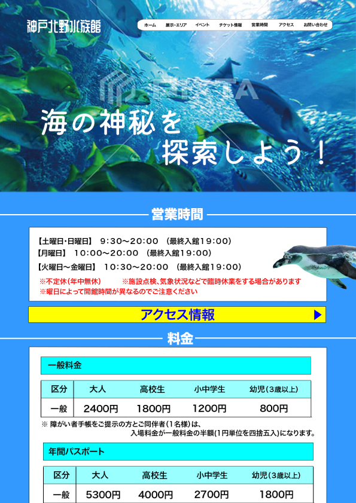
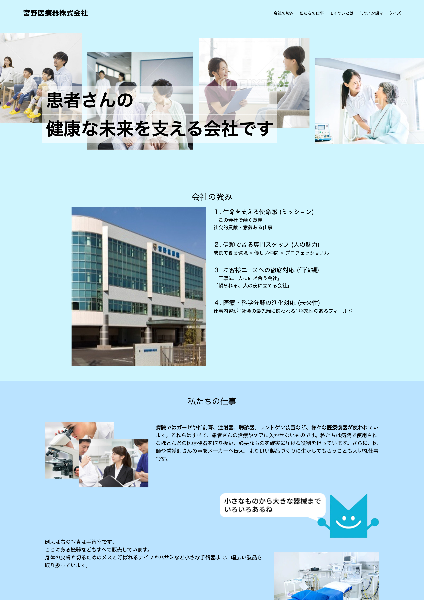
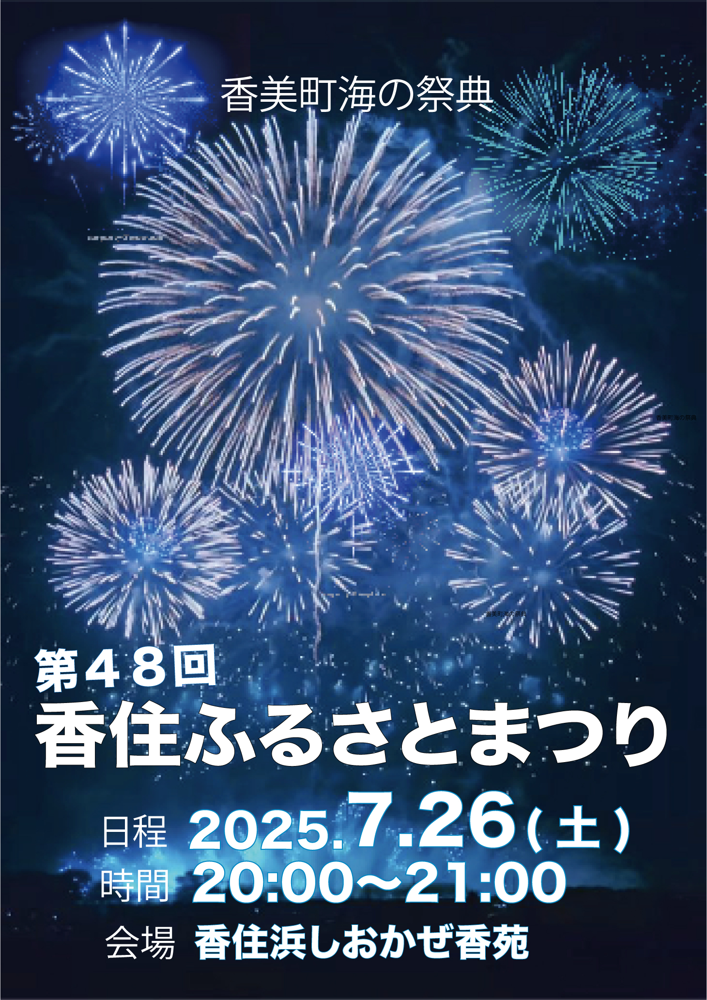
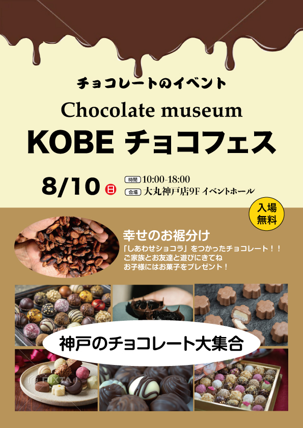
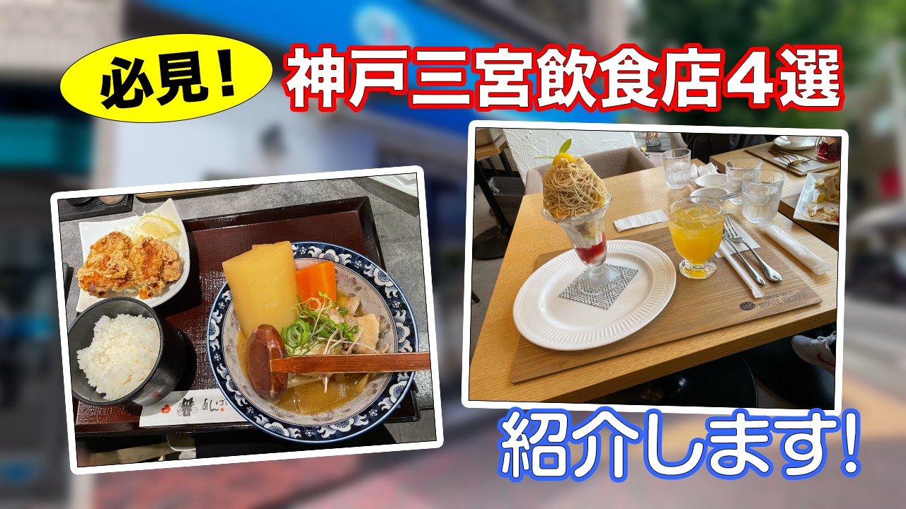
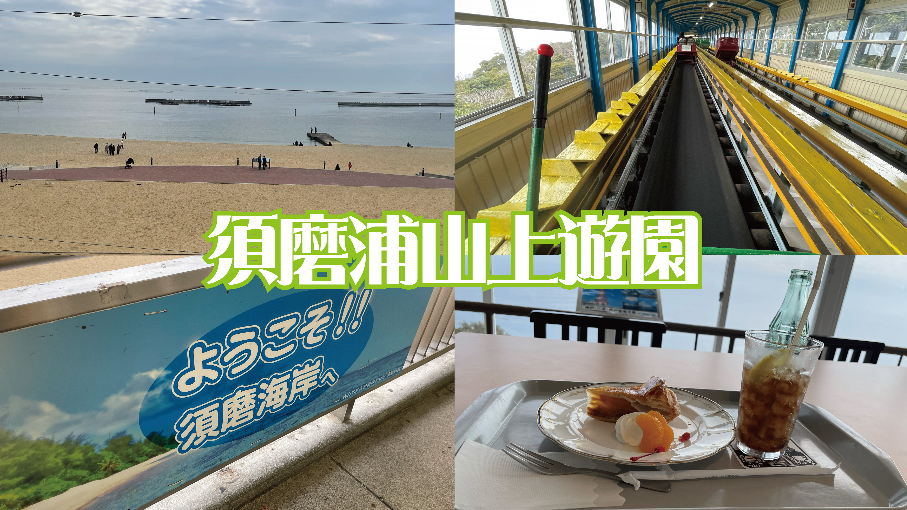
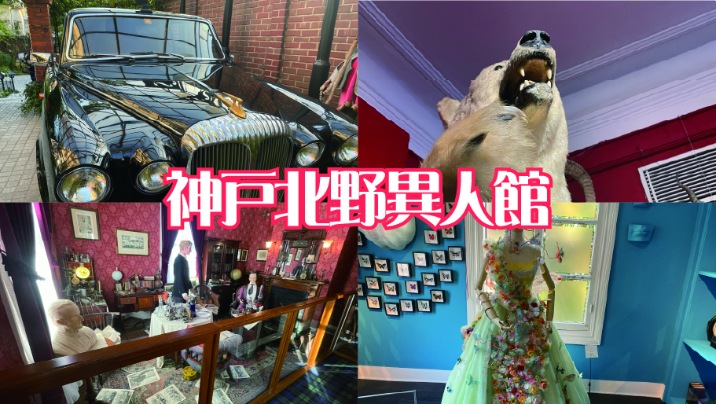

ABOUT
私の紹介

神戸電子専門学校グラフィックデザイン学科 植田心之介です。
学校ではWebデザインやHTML・CSS・JavaScriptを使ったコーディングを学んでいます。
デザインだけでなく、操作のしやすさにもこだわり、見た人が報を理解できるサイトづくりを心がけています。
制作を通して新しい技術や表現方法を学びながら、自分のアイデアを形にすることを大切にしています。
これからも知識と技術を磨き、デザインと機能性を両立した、魅力のあるWebサイトを制作していきたいと考えています。
SKILL
実績の紹介
デザインからコーディングまで、学んできたスキルを紹介します。
HTML
CODING適切なHTML構造を意識し、ページを組み立てます。
CSS
STYLINGレイアウトや配色を調整し、レスポンシブに対応します。
JavaScript
PROGRAMMINGボタン操作や表示切り替えなどの動きを学んでいます。
Figma
UI DESIGNWebサイトの画面構成やデザインカンプを作成します。
Illustrator
GRAPHICポスターやロゴなどのグラフィックを制作します。
Photoshop
IMAGE EDIT写真の補正や画像素材の調整に使用します。
Premiere Pro
VIDEO動画のカットやテロップの追加などを行います。
WORKS
作品の紹介
Web・グラフィック

水族館サイト
架空の水族館サイトを制作する学校課題として、デザインを行いました。
使用技術：Illustrator / Photoshop

宮野医療機器株式会社 LP
医療関連の仕事内容を一般の方にも分かりやすく伝えるランディングページです。
使用技術：Illustrator / figma / HTML / CSS

花火大会ポスター
「香住ふるさとまつり花火大会」のポスターを制作しました。
制作ツール：Illustrator

チョコフェスポスター
架空イベント「チョコフェス」のポスターを制作しました。
制作ツール：Illustrator
動画

動画０１
神戸三宮の飲食店を４選紹介する動画です。
制作ツール：Premiere Pro

動画０２
神戸三宮にある「神戸北野異人館街」を散策した動画です。
制作ツール：Premiere Pro

動画０３
須磨離宮公園を一人で散策する動画です。
制作ツール：Premiere Pro